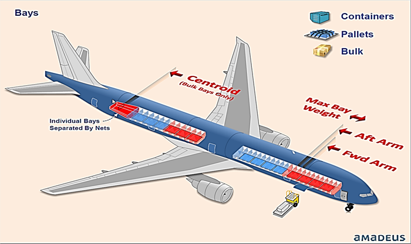
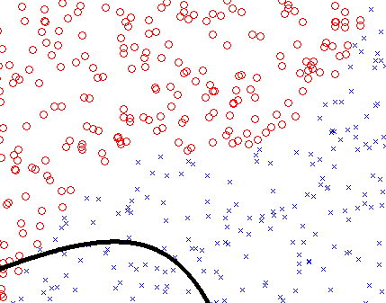

AI/ML for FM Autoload
Forecast Zero Fuel Weight
Forecast Zero Fuel Weight
Why me as Phd AI/ML student?
- I have 5 years experience in FM Autoload
- I know the code
- I know the tooling
- I know the weird things
- Committed to deliver results
- Implemented GUROBI solver and reformulated problematic parts that increased the performance by 9 times.
- Implemented Autoload in passes that resolved numeric issue and increased the solution quality
- Reformulated ULD groups locking mode that improved the quality, performance and maintenance
- Active in open source project communities
- https://github.com/tojocky
- I’m keen to learn more about AI/ML and its real application to Amadeus
- Previously, working on Autoload performance improvement, I had an attempt to correlate solutions
FM Autoload: Problem
Takes the following data as input:
- Aircraft subtype data
- Autoload theme
- Live Flight Data
Formulate a mathematical problem:
- Up to 1000s variables
- Up to 1000s constraints
- Solves the problem in several passes due to numeric issue
It uses one of the following M.I.L.P. solver:
- COIN-OR
- GUROBI
FM Autoload: Phd proposal
I will start try supervised learning:
- Creating labels (observations) data based on MILP variable and extra info (e.g. theme, SLDG conflicts, Commodity allocation preference) without ids
- Create the solution validation similar to approve distribution
- Create comparison between 2 solutions
- Validate and test the resulted neuronal graph
- Apply deep learning algorithms (e.g. Convolutional Neuronal Network) to find relation between defined input and output labels

After will continue with semi-supervised learning:
- Explore unlabelled data for training (latent variables) on top of labelled data
- Optimize the previous defined labeled data
- Learning new rules based on the distribution approved by user
Forecast ZFW: Problem
Takes The following weights from the previous distribution:
- Cargo
- Currier
- Passenger
- baggage
Applies Estimates Move Average (EMA) on:
- Cargo
- Currier
Store ~100 historical records of:
- Passenger
- baggage
...
Uses EMAs to calculate the current distribution:
- Forecast Mail weight
- Forecast Cargo weight
- Forecast Currier weight
and historical data for the current distribution
Forecast ZFW: Phd Proposal
I will start with:
- Collecting historical data
- Applying supervised vector machine data for Mail, Cargo and Currier because it has only few variable
When more historical data will be available
- Unsupervised ML should be considered for Mail, Cargo, Currier, Passenger and baggage
- Find unlabelled data to increase the accuracy of Forecast Passenger and baggage weights

Using Tensorflow because:
- Is open-source
- multi-GPU
- Training across distributed resources (i.e., cloud)
- python API
- C/C++ API
- Visualize the graph itself
- big active community
Using MapD because:
- Blazing fast using GPUs
- open-source
- perfect for Network Neuronal DB manipulation
Other possible areas for AI/ML
- Pulse rule engine: Create new rules based on ML patterns
- FM in automated mode: reduce human interaction by automating the manual actions. One step further from Time/Activity scheduler